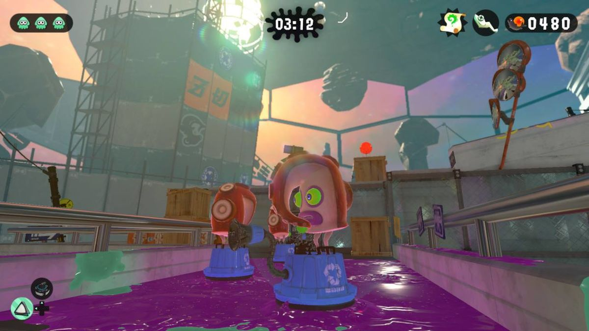

Story mode är 100% min favorit del av splatoon, alla levlar är olika och man har lika kul oavsett vilken svårighets grad. En story mode level tog mig ungefär en månad att klara. Om man kör "turf war" (vilket är pvp) så finns det sjukt många sweats och tryhards, story mode är 100 gånger bättre enligt mig.